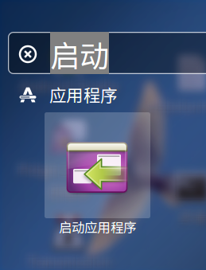
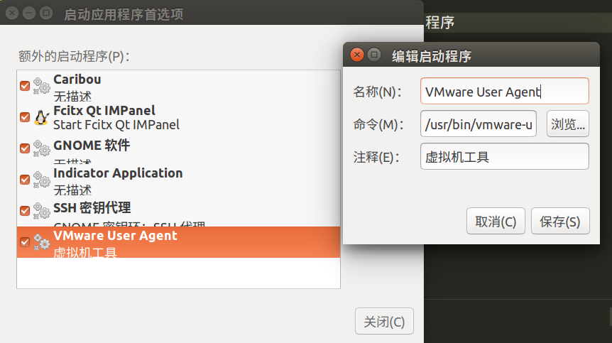

Ubuntu的使用
Ubuntu系统使用过程中的常用设置。其中包括启动项目的管理、启动项对应的文件、systemd(d结尾的就是守护进程daemon)service、systemd-sysv-generator命令依据旧的SysV脚本生成新的systemd脚本等等。
启动项管理
Ubuntu下的启动项在X Window环境下可以通过->Dash搜索->启动应用程序,如下图所示：  
以上是图形界面的设置，其实是在~/.config/autostart/下创建了一个.Desktop的桌面快捷方式文本文件
[Desktop Entry]
Type=Application
Encoding=UTF-8
Exec=/usr/bin/vmware-user
Name=VMware User Agent
# KDE bug 190522: KDE does not autostart items with NoDisplay=tru...
# NoDisplay=true
X-GNOME-Autostart-enabled=true
Comment[zh_CN]=虚拟机工具
Comment=虚拟机工具
Hidden=false # 如果图形界面删除启动项目的话，这个Hidden会被改成true
除了用户自己目录可以添加启动项目之外，在系统配置目录下/etc/xdg/autostart/也可以设置系统级的启动项目，其实是一样的。
以上用到.Desktop文件可以直接从/usr/share/applications/目录去拷贝，同理创建桌面快捷方式也是一样，只需要将.Desktop文件拖拽到桌面即可、或者使用命令行。
# 这样就创建了桌面快捷方式
cd /usr/share/applications/yourapp.desktop ~/Desktop/
systemd、systemd-sysv-generator
现在新的linux操作系统都开始使用systemd来管理系统服务，摒弃了以前的sysv模式下的service chkconfig init命令。
为了兼容以前旧的系统服务模式，systemd提供了systemd-sysv-generatorwrapper包装器，将旧的.sh文件包装成可供systemd使用的.service文件。
使用systemd-sysv-generator生成.service文件
# 使用如下命令会在/tmp目录下生成对应的servicename.service文件
/lib/systemd/system-generators/systemd-sysv-generator
仅需要拷贝新生成的.service文件到/lib/systemd/system/底下即可。
systemctl命令管理服务
# 现在可以通过systemctl管理旧的.sh服务了
systemctl status servicename.service
systemctl enable servicename.service
locale设置语言
在/etc/default/locale文件里面设置默认的语言选项
格式化ps内存输出为可读格式
# 方式1(在printf的格式中务必加上"\n"，才能分行！)
ps -eo rss,pid,user,command --sort=-rss | awk 'NR==1{printf "%10s\t%s\t%s\t%s\n",$1,$2,$3,$4}
NR>=2{printf "%8.2fMB\t%s\t%s\t%s\n",$1/1024,$2,$3,$4}' | head -n 10
# free可以查看总共有多少内存，已经使用了多少！
# 方式2 (显示出命令行后所有的字段，带参数的)
# 最后的一个printf "" 打印空格是为了让awk的输出换行
ps -eo rss,pid,user,command --sort=-rss | awk '{ for ( x=1 ; x<=NF ; x++ )
{ if(x==1&&NR!=1){ printf("%8.2fMb\t",$x/1024)}else{ printf("%10s\t",$x)} } print "" }'
shell脚本使用cat命令创建文件
使用cat命令创建文件比使用echo创建文件来的更直观，更适用！
......其它shell语法......
cat > fileext.Desktop << eof
[Desktop Entry]
Type=Application
Encoding=UTF-8
Exec=/usr/bin/vmware-user
Name=VMware User Agent
# KDE bug 190522: KDE does not autostart items with NoDisplay=tru...
# NoDisplay=true
X-GNOME-Autostart-enabled=true
Comment[zh_CN]=虚拟机工具
Comment=虚拟机工具
Hidden=false
eof
......其它shell语法......